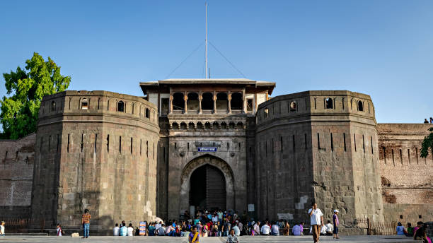

Ajanta-Ellora Caves, Aurangabad One of the finest examples of ancient rock-cut caves is Ajanta and Ellora Caves located in Aurangabad. There are 29 Ajanta Caves and 34 Ellora Caves, all of which are designed beautifully with paintings and intricately carved sculptures and it is one of the best historical places in Maharashtra.
One of the finest examples of ancient rock-cut caves is Ajanta and Ellora Caves located in Aurangabad. There are 29 Ajanta Caves and 34 Ellora Caves, all of which are designed beautifully with paintings and intricately carved sculptures and it is one of the best historical places in Maharashtra.
The caves are surrounded by dense forests, and the view outdoors as well as within the caves, is definitely one that you’ll fall in love with. An important site here is the Kailash Temple, the single largest monolithic structure in the world. All this makes the Caves a UNESCO World Heritage site. |
Gateway of India, Mumbai Renowned as one of the most iconic structures of India, Gateway of India, was constructed along the Mumbai Harbour in 1924. Located at the tip of Apollo Bunder, this massive structure represents a commemorate memorial.
Renowned as one of the most iconic structures of India, Gateway of India, was constructed along the Mumbai Harbour in 1924. Located at the tip of Apollo Bunder, this massive structure represents a commemorate memorial.
It was constructed in honour of King George V and his wife Queen Mary when they were on their tour to India. Once a grandeur of the British settlement, this famous tourist spot today pulls food stallers, vendors, nature lovers, and photographers to adore its charm.It is from here that you can board the boats to sail to the Elephanta Caves. |
Shaniwar Wada, Pune Shaniwar Wada is an excellent example of the Maratha Imperial architecture used in India in the bygone era. It tells the historical tale of the Maratha Kingdom as it has seen every event that occurred in Peshwas Life over time.It was built by the Peshwas’ symbolizing the brave hearts of the Marathas, who strived hard to keep its glory alive. Though the fort couldn’t tolerate the battering the stone boundaries still recite the untold tales of the colourful journeys lead by the heroic Marathas.he walls have a magnificent wooden gate reflecting the Mughal architecture. |